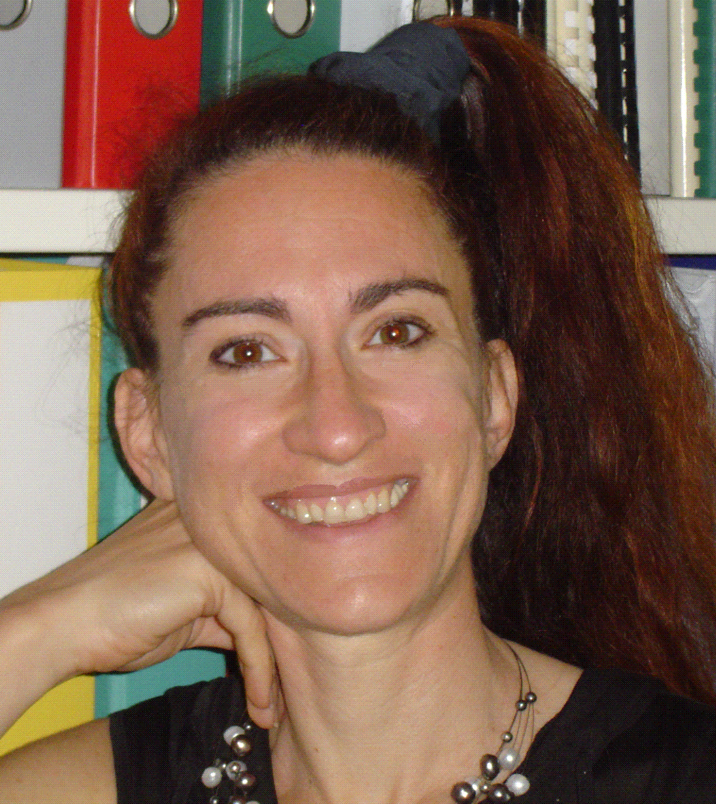

|
|
IEEE DCOSS 2011 - Keynote - June 27
Mobile Phones and Opportunistic Computing: a New Human Dimension in the Sensor World
The recent proliferation of sensor-equipped smartphones has brought sensor networking to the general public in the form of mobile phone sensing. By reaching out to mainstream users, mobile phone sensing has the potential of achieving the pervasive computing vision by putting the human element in the foreground. Because mobile phone sensing may require computationally intensive applications, it is impractical and inefficient to stick to local processing. On the other hand, the emerging trend of offloading expensive tasks to the mobile computing cloud has a significant energy footprint and suffers from the drawbacks of extreme centralization. Opportunistic computing provides an appealing alternative to the mobile computing cloud by allowing devices to join forces and leverage heterogeneous resources from other devices. Because this is only possible by leveraging human mobility, opportunistic computing adds even more prominence to the role of the human element, which is already central to mobile phone sensing and now becomes the key enabler of pervasiveness.
Silvia Giordano, SUPSI - University of Applied Science, Switzerland

Silvia Giordano, is currently a Professor at the University of Applied Sciences of
Southern Switzerland (SUPSI) in Manno, Switzerland.
She earned a Ph.D. in Computer Science from the Swiss Federal Institute of Technology in Lausanne, Switzerland. Currently, she also holds the position of Director of the Networking Lab at SUPSI. She is one of the founder of the Opportunistic Networking and Computing area, with the European projects Haggle and SCAMPI.
She has published extensively in the areas of opportunistic networking and computing, wireless and mobile ad hoc networks, sensor networks, quality of service, and traffic control in wireless networks.
Silvia Giordano serves as a series editor of the IEEE Communications Magazine, as an area editor of the Elsevier Computer Communications journal, as well as a member of the Advisory Board of the Ad Hoc Networks journal published by OCP Science. She is also a member of the Editorial Board of the Journal of Ubiquitous Computing and Intelligence (JUCI) and of the Journal of Autonomic and
Trusted Computing (JoATC), both published by American Scientific Publishers (ASP), as well as of the Mediterranean Journal of Computer and Networks, published by SoftMotor. She is a member of the IEEE Computer Society, of the ACM, and of the IFIP Working Group on Mobile and Wireless Communications (WG 6.8).
Prof. Giordano has served as program chair and general chair for several international conferences, including the IEEE Pervasive Computing and Communication (PerCom), IEEE International Symposium on a World of Wireless Mobile and Multimedia Networks (WoWMoM), IEEE Vehicular Technology Conference (VTC) and the IEEE Mobile Ad-hoc and Sensor Systems (MASS).
Since 2005, Silvia Giordano has also been a co-organizer and steering committee member of the International Work-shop on Sensor Networks and Systems for Pervasive Computing (PerSeNS), which takes place every year and is co-located with the PerCom. She is also the Program Co-chair of MASS 2011, in Barcelona - October 2011, and General Co-chair of PerCom 2012 in Lugano, Switzerland, in March 2012.
|
|
|